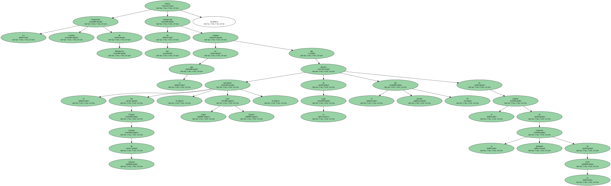
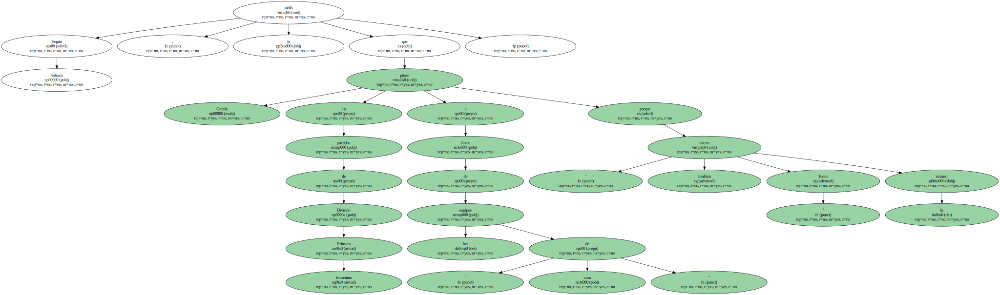
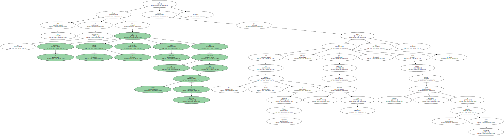
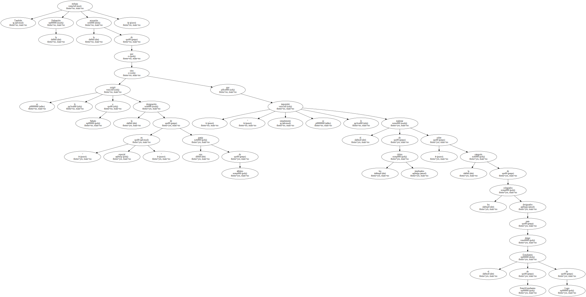
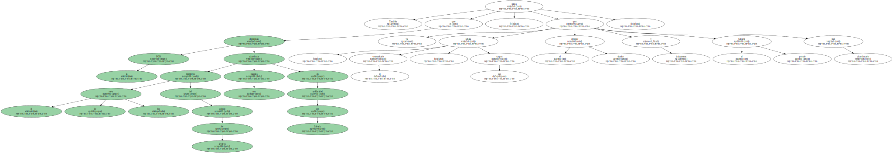
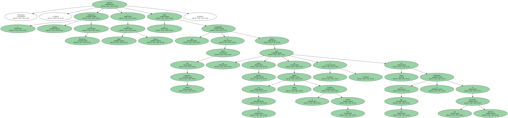

La Federación Gallega de Baloncesto emitió hoy un comunicado en el que asegura que el presidente del Colegio Gallego de Árbitros , Luis Angel Sabariz , dimitió de su cargo el pasado día 25 en la reunión de la comisión delegada de la FGB.
Sabariz denunció ayer miércoles que había sido destituido por el presidente de la FGB , Francisco García , tras negarse a favorecer a los equipos de la Comunidad Autónoma gallega ante rivales de otras regiones.

Según Sabariz , García le pidió que en partidos de Primera División femenina pitase a favor de los equipos " de casa " porque " también fuera hacen lo mismo ".
La FGB afirma en su comunicado que el presidente " nunca " ha solicitado nada semejante del ex presidente del Comité Gallego de Árbitros y destaca que tres de los cuatro equipos de Primera División femenina que encabezan la tabla son gallegos por sus resultados , no sólo como locales , sino porque también ganan encuentros en sus partidos como visitantes.
También rechaza la Federación la acusación de que se le exigió a Sabariz la designación " en especial " de una pareja de árbitros , sino que " simplemente se le transmitió el malestar de los clubes implicados " sobre la categoría de los colegiados designados para dirigir el Estudiantes de Ferrol-Estudiantes de Lugo.
Indica asimismo que en repetidas ocasiones Sabariz le manifestó al presidente de la FGB su intención de dejar el cargo debido a las múltiples ocupaciones , por lo que se iniciaron conversaciones con diferentes personas para que , una vez que concluya la presente temporada , se pudieran hacer cargo del colectivo arbitral.

También niega la FGB que el resto de los miembros del colegio de árbitros decidieran abandonar sus puestos en solidaridad con Sabariz , ya que , señala el comunicado , únicamente el director técnico y el propio Sabariz han abandonado sus cargos.
Finalmente , la Federación Gallega de Baloncesto agradece a Luis Angel Sabariz la labor que desempeñó al frente del colectivo arbitral durante los últimos nueve años " en los que nunca ha habido el más mínimo problema y en los que nunca se ha interferido en sus decisiones internas ".
